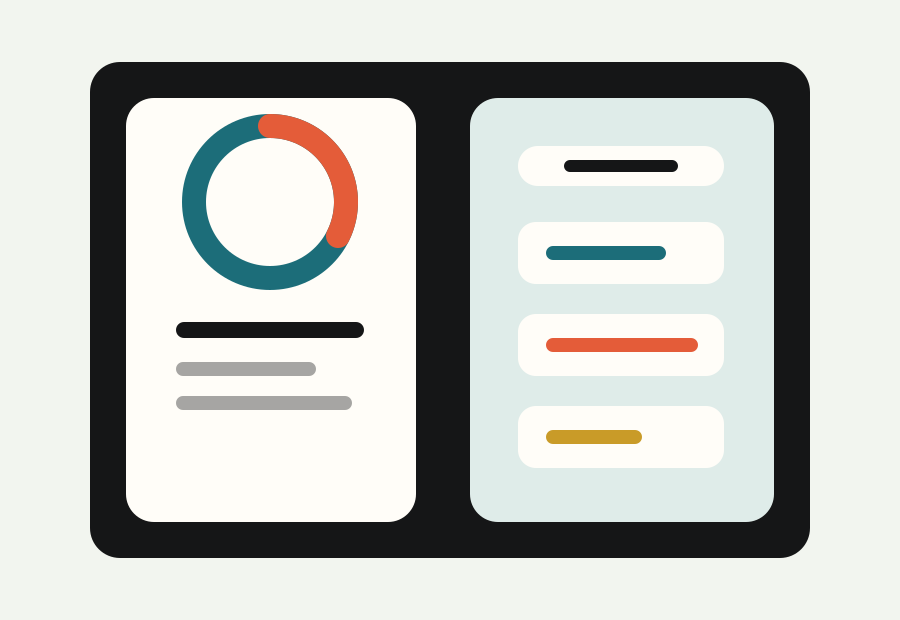

Nova Ops
Eine ruhige Operations-Plattform mit klaren Metriken, starkem CTA und vertrauensbildender Produktpraesenz.
Landing Page oeffnenGitHub Portfolio
Eine kompakte Sammlung aus sechs unterschiedlichen Landing-Page-Konzepten, gebaut als schnelle, statische Website fuer GitHub Pages.
Auswahl
Jedes Beispiel hat eine eigene Zielgruppe, visuelle Sprache und conversion-orientierte Struktur.
Eine ruhige Operations-Plattform mit klaren Metriken, starkem CTA und vertrauensbildender Produktpraesenz.
Landing Page oeffnenEin Restaurant-Auftritt mit Reservierungsfokus, warmem Editorial-Gefuehl und schneller Orientierung.
Landing Page oeffnen
Eine hochwertige Studio-Seite fuer Interior Design, mit Portfolio-Signal, Prozess und Beratungseinstieg.
Landing Page oeffnen
Ein energischer App-Launch mit Fokus auf Programme, Fortschritt und einen direkten Teststart.
Landing Page oeffnen
Eine klare Energie-Landing-Page fuer Monitoring, Einsparungen und technische Entscheidungstraeger.
Landing Page oeffnen
Ein sicherheitsorientierter Fintech-Auftritt mit knapper Positionierung und Enterprise-Signalen.
Landing Page oeffnenAnsatz
Die Beispiele zeigen unterschiedliche Branchen, aber bleiben technisch schlank: semantisches HTML, responsive CSS, lokale Assets und wenige JavaScript-Zeilen.
Jede Landing Page macht Angebot, Zielgruppe und naechsten Schritt sofort sichtbar.
Palette, Rhythmus und Bildsprache passen zur jeweiligen Marke statt ein Template zu wiederholen.
Keine Build-Pipeline, keine externen Fonts, keine CDN-Abhaengigkeiten. GitHub Pages reicht.
Kontakt
Das Portfolio ist so aufgebaut, dass weitere Landing Pages schnell ergänzt werden können.